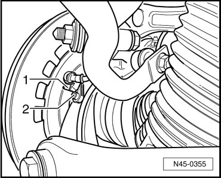

Rear Wheel Speed Sensor
Rear Wheel Speed Sensor
Removing
- Raise vehicle.
- Disconnect the speed sensor wiring connector - 1 -.

- Remove bolt - 2 -.
- Remove the Anti-lock Brake System (ABS) speed sensor from wheel bearing housing.
Installing
- Before inserting wheel speed sensor, clean inner surface of bore and coat sensor completely with polycarbamide grease (G 052 142 A2).
- Insert the speed sensor into the bore in the wheel bearing housing and tighten the bolt to 8 Nm.
- Connect speed sensor wiring connector.